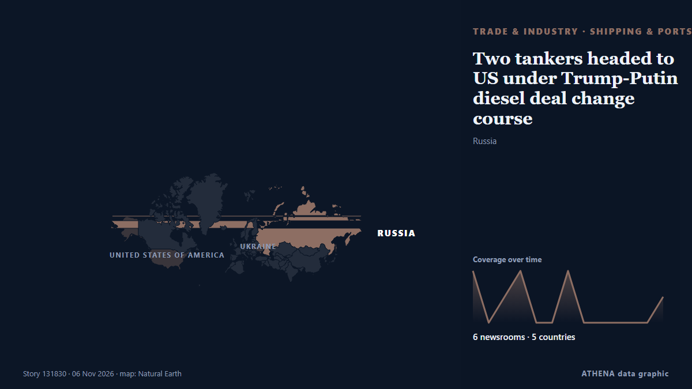

Shipping & ports
SponsoredPresented by  Cybernetics and Artificial Intelligence Lab Welcome to the Cybernetics and Artificial Intelligence Laboratory, established at the Department of Business Administration of the National and Kapodistrian University of Athens. The lab is headed by Professor Dimitrios Thomakos. The lab aims to do research that can be published in top venues. Our research uses tools and methods of Artificial Intelligence, and lies in the following areas: - Forecasting - Decision making - Cyber security - Finance We are always looking forward to collaborating with exceptional students!
Cybernetics and Artificial Intelligence Lab Welcome to the Cybernetics and Artificial Intelligence Laboratory, established at the Department of Business Administration of the National and Kapodistrian University of Athens. The lab is headed by Professor Dimitrios Thomakos. The lab aims to do research that can be published in top venues. Our research uses tools and methods of Artificial Intelligence, and lies in the following areas: - Forecasting - Decision making - Cyber security - Finance We are always looking forward to collaborating with exceptional students!
| 24 Oct | 0 |
|---|---|
| 25 Oct | 0 |
| 26 Oct | 0 |
| 27 Oct | 0 |
| 28 Oct | 0 |
| 29 Oct | 0 |
| 30 Oct | 0 |
| 31 Oct | 0 |
| 1 Nov | 2 |
| 2 Nov | 6 |
| 3 Nov | 3 |
| 4 Nov | 4 |
| 5 Nov | 8 |
| 6 Nov | 0 |

Two tankers headed to US under Trump-Putin diesel deal change course
Two tankers carrying Russian diesel fuel to the United States have changed course, the Financial Times reported. from Meduza (English)
Hapag-Lloyd passes 1m teu in Africa and targets 1.7m teu by 2030
Hapag-Lloyd's African volumes have crossed 1m teu, the carrier said as it marked 20 years in South Africa. from Container Magazine
Iran Exempts India And China From Hormuz Restrictions. Why It Matters
The arrangement is significant for India given its dependence on the Middle East for energy supplies and its wider trade interests in the region. from NDTV
India joins ISF Verify initiative for digital seafarer certification
India has joined the ISF Verify initiative, marking a significant step towards the wider adoption of digital seafarer certification across the global shipping industry. from Container News
LR Report Finds Alternative-Fuel Vessels Outpace Port Readiness
Alternative-fuel vessel orders are outpacing the development of the port infrastructure needed to support them, according to a new global study by Lloyd’s Register (LR)… from Maritime Professional
Report: South Korea's anti-piracy unit to expand operations closer to Hormuz Strait
SEOUL, Nov. 5 (Yonhap) -- South Korea plans to expand its anti-piracy mission of... from Yonhap (English)
Iran allows Indian, Chinese ships to transit Hormuz
Iran has exempted Indian ships from the restrictions it imposed on passage through the Strait of Hormuz, along with vessels from China, Iraq, and Qatar, a senior Iranian lawmaker has said. from The Island
Greece, Cyprus, Israel Again Voice Rejection of Turkey-Libya Maritime Deal
A trilateral meeting in Athens focused on maritime security, defense industry cooperation and regional threats, with the three countries challenging the legal validity of the Turkey-Libya memorandum… from To Vima (English)
Iran protests IMO’s biased reports on shipping security
London, IRNA – The Islamic Republic of Iran has criticized the International Maritime Organization (IMO) biased reports on the shipping crisis, stressing that seafarer protection should not be… from IRNA (English)
Israeli cruise ship Crown Iris left Syros island after a false bomb threat
Coast Guard cites potential threats to public order, island’s economy. from Anadolu Agency (English)
Iran’s IRGC says four tankers destroyed after hitting mines near Strait of Hormuz
Coalition says it destroyed two ballistic missile launchers The Coalition has released footage it says shows the targeting and destruction of two ballistic missile launch platforms. from Gulf News
Windward expands into Maritime Visual Intelligence with acquisition of Azimut.ai
The newly added sensing layer identifies and fingerprints vessels in real time at maritime chokepoints and ports, enabling the visibility. from Cyprus Shipping News
Chile maintains environmental approval for San Antonio Outer Port
Chile’s Committee of Ministers has maintained the favourable environmental approval for the US$4 billion San Antonio Outer Port project. from Container News
NAVTOR introduces real-time AIS streaming in NavFleet platform
Maritime technology company NAVTOR has introduced real-time AIS streaming to its NavFleet platform, allowing fleet managers to monitor vessel positions, movements and surrounding traffic with minimal… from MarineLink
Somali Pirates Hijack Iranian Dhow, Marking Fourth Off Somalia in 2026
On October 29, 2026, a Somali Pirate Action Group of 12 armed pirates hijacked the Iranian fishing dhow AZINI approximately 185 nautical miles east of Bandarbeyla, Puntland. from MarineLink
International Transport Employees Federation Formed In India To Protect Seafarer Rights
Indian maritime unions and welfare groups establish ITEF in Chennai to strengthen seafarers’ rights, safety and welfare. from Marine Insight
‘World’s first three ammonia-fuelled Capesize bulk carriers’ named at ceremony in China
A naming ceremony for what Mitsui O.S.K. from Ship.Energy
DP World strengthens China–Africa corridor with new shipping link
The China Africa Link strengthens maritime connections between the Far East and Africa, supporting more flexible supply chains and access. from Cyprus Shipping News
Tanker hit by two unknown projectiles off Oman, UKMTO says
The location of the latest strike matters most for oil. from investingLive (ForexLive)